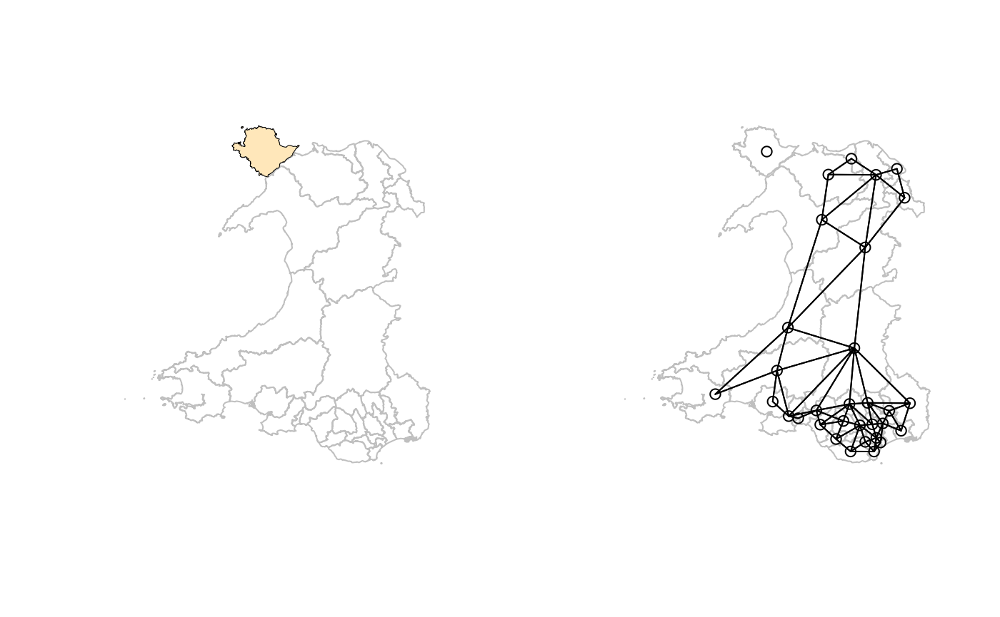
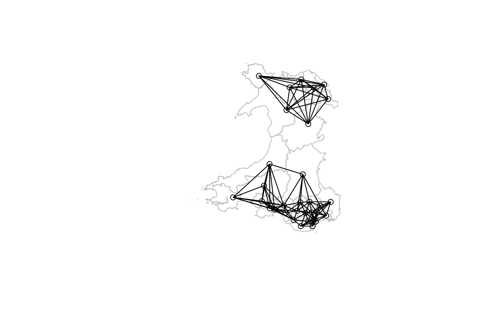
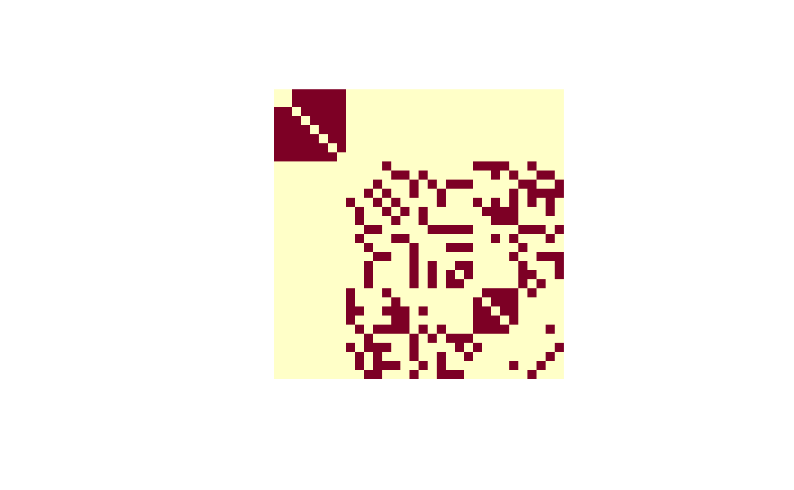
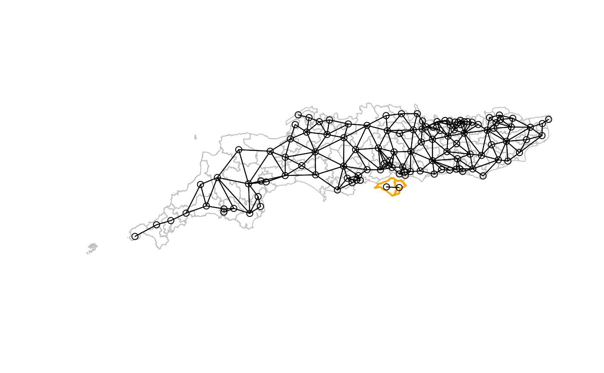

No-neighbour observation and subgraph handling
Roger Bivand
Source:vignettes/subgraphs.Rmd
subgraphs.RmdIntroduction
The spdep package has always been careful about
disconnected graphs, especially where the disconnected observations are
graph nodes with no neighbours, that is no incoming or outgoing edges.
In nb neighbour objects, they are encoded as integer
vectors of length 1 containing integer 0, which is an
invalid index on
,
where
is the observation count. Functions taking neighbour objects as
arguments use the zero.policy argument to guide how to
handle no-neighbour observations.
spdep has also had n.comp.nb to find the
number of disjoint connected subgraphs in an nb object,
contributed by Nicholas Lewin-Koh in 2001 and using depth-first search
for symmetric neighbours, showing in addition which observations belong
to which subgraph. Obviously, no-neighbour observations are singleton
graph nodes, but subgraphs are also troubling for spatial analysis,
because there is no connection between the spatial processes in those
subgraphs. The ripples in one pond cannot cross into a separate pond if
they are not connected.
From spdep 1.3-1, steps began to raise awareness of the
possibility that neighbour objects might be created that are
disconnected in some way, mostly through warnings, and through the
computation of subgraph measures by default. This vignette is intended
to provide some background to these steps.
No-neighbour observations
From the start, nb objects have recorded no-neighbour
observations as an integer vector of unit length and value
0, where neighbours are recorded as ID values between
1 and N, where N is the
observation count. print and summary methods
have always reported the presence of no-neighbour observations, and
listed their IDs (or region.id values). If an
nb object contains no-neighbour observations, the user has
to decide whether to drop those observations, or if retained, what value
to give its weights. The zero.policy argument uses zero as
the value if TRUE, but if FALSE causes nb2listw to fail.
The value of zero.policy in a call to functions like
nb2listw, subset.listw or
mat2listw creating listw objects representing
sparse spatial weights matrices is added to the created object as an
attribute, and used subsequently to pass through that choice to other
functions. For example, moran.test takes the value of this
attribute as default for its zero.policy argument:
## Loading required package: spData## Loading required package: sf## Linking to GEOS 3.13.0, GDAL 3.9.2, PROJ 9.4.1; sf_use_s2() is TRUE
args(moran.test)## function (x, listw, randomisation = TRUE, zero.policy = attr(listw,
## "zero.policy"), alternative = "greater", rank = FALSE, na.action = na.fail,
## spChk = NULL, adjust.n = TRUE, drop.EI2 = FALSE)
## NULLIf observation has no neighbours, its weights sum , as (see discussion in Bivand and Portnov (2004)). Its eigenvalue will also be zero, with consequences for analytical inference:
eigen(0)$values## [1] 0The adjust.n argument to measures of spatial
autocorrelation is by default TRUE, and subtracts the count of singleton
nodes from
in an attempt to acknowledge the reduction in information available.
This discussion will address problems arising when analysing areal/lattice data, and neighbours are defined as polygon features with contiguous boundaries. One way in which no-neighbour observations may occur is when they are islands. This is clearly the case in Freni-Sterrantino, Ventrucci, and Rue (2018), where Capraia and Giglio Isles are singleton nodes. Here we take Westminster constituencies for Wales used in the July 2024 UK general election. If GDAL is at least version 3.7.0, the driver supports compressed GeoPackage files, if not they must be decompressed first.
(GDAL37 <- as.numeric_version(unname(sf_extSoftVersion()["GDAL"])) >= "3.7.0")## [1] TRUEThe boundaries are taken from the Ordnance Survey Boundary-Line site, https://osdatahub.os.uk/downloads/open/BoundaryLine, choosing the 2024 Westminster constituencies (https://www.os.uk/opendata/licence), simplified using a tolerance of 50m to reduce object size, and merged with selected voting outcomes for constituencies in Great Britain https://electionresults.parliament.uk/countries/1, (https://www.nationalarchives.gov.uk/doc/open-government-licence/version/3/). Here, the subset for Wales is useful as we will see:
file <- "etc/shapes/GB_2024_Wales_50m.gpkg.zip"
zipfile <- system.file(file, package="spdep")
if (GDAL37) {
w50m <- st_read(zipfile)
} else {
td <- tempdir()
bn <- sub(".zip", "", basename(file), fixed=TRUE)
target <- unzip(zipfile, files=bn, exdir=td)
w50m <- st_read(target)
}## Reading layer `GB_2024_Wales_50m' from data source
## `/tmp/RtmpcuVtwS/temp_libpathba7861ea38876/spdep/etc/shapes/GB_2024_Wales_50m.gpkg.zip'
## using driver `GPKG'
## Simple feature collection with 32 features and 19 fields
## Geometry type: MULTIPOLYGON
## Dimension: XY
## Bounding box: xmin: 146597.1 ymin: 164536.5 xmax: 355287 ymax: 395993.5
## Projected CRS: OSGB36 / British National Grid
(w50m |> poly2nb(row.names=as.character(w50m$Constituency)) -> nb_W_50m)## Warning in poly2nb(w50m, row.names = as.character(w50m$Constituency)): some observations have no neighbours;
## if this seems unexpected, try increasing the snap argument.## Warning in poly2nb(w50m, row.names = as.character(w50m$Constituency)): neighbour object has 2 sub-graphs;
## if this sub-graph count seems unexpected, try increasing the snap argument.## Neighbour list object:
## Number of regions: 32
## Number of nonzero links: 136
## Percentage nonzero weights: 13.28125
## Average number of links: 4.25
## 1 region with no links:
## Ynys Môn
## 2 disjoint connected subgraphsThe two subgraphs are the singleton Ynys Môn and all the other 31 constituencies:
##
## 1 31
## 1 1The left map shows that Ynys Môn can be shown selecting by name, as a
black border, and by the zero cardinality of its neighbour set, using
card, filling the polygon. The right map shows the location
of the island, known in English as Anglesey, north-west of the Welsh
mainland, and with no neighbour links:
ynys_mon <- w50m$Constituency == "Ynys Môn"
pts <- st_point_on_surface(st_geometry(w50m))
opar <- par(mfrow=c(1, 2))
plot(st_geometry(w50m), border="grey75")
plot(st_geometry(w50m)[ynys_mon], add=TRUE)
plot(st_geometry(w50m)[card(nb_W_50m) == 0L], add=TRUE, border="transparent", col="wheat1")
plot(st_geometry(w50m), border="grey75")
plot(nb_W_50m, pts, add=TRUE)
par(opar)From the maps, we can see that the island is close to two constituencies across the Afon Menai (Menai Strait in English), the three simplified polygons being less than 280m apart, measured between polygon boundaries:
dym <- c(st_distance(w50m[ynys_mon,], w50m))
sort(dym)[1:12]## Units: [m]
## [1] 0.0000 123.4132 277.5414 16658.7265 37985.7086 54096.7729
## [7] 58146.4320 65550.2491 67696.3323 93741.9873 113007.3659 137858.1826Using a snap distance of 280m, we can join the island to
its two obvious proximate neighbours:
(nb_W_50m_snap <- poly2nb(w50m, row.names=as.character(w50m$Constituency), snap=280))## Neighbour list object:
## Number of regions: 32
## Number of nonzero links: 140
## Percentage nonzero weights: 13.67188
## Average number of links: 4.375
plot(st_geometry(w50m), border="grey75")
plot(nb_W_50m_snap, pts, add=TRUE)
In this case, increasing snap from its default of 10mm
(or close equivalents for geometries with known metrics; previously
sqrt(.Machine$double.eps) 1.4901161^{-8} in all cases)
helps. The symmetric links added are to:
## [1] "Bangor Aberconwy" "Dwyfor Meirionnydd"This is not always going to be the case, but here the strait is
narrow. If islands are much further offshore, other steps may be
required, because a large snap distance will draw in extra
neighbours for already connected observations. It is also possible that
increasing the snap distance may fail to link islands if
they are not considered candidate neighbours, that is if their extents
(bounding boxes), buffered out by the snap value, do not
intersect.
We can also use the distances to pick out those neighbour candidates that meet our criterion of 280m, taking care not to lose the ordering needed to identify the correct observations:
## [1] 3These candidates are the island itself, and the two neighbours across the Menai Strait:
## [1] "Ynys Môn" "Bangor Aberconwy" "Dwyfor Meirionnydd"The addlinks1 function can be used to add both the links
from Ynys Môn to its neighbours, and by symmetry from them to Ynys Môn.
This approach means that each island should be treated separately (or
scripted in sequence), but does not risk adding spurious neighbours in
denser parts of the study area.
(nb_W_50m_add <- addlinks1(nb_W_50m, from = cands[1], to = cands[2:meet_criterion]))## Neighbour list object:
## Number of regions: 32
## Number of nonzero links: 140
## Percentage nonzero weights: 13.67188
## Average number of links: 4.375
all.equal(nb_W_50m_add, nb_W_50m_snap, check.attributes=FALSE)## [1] TRUESince these constituency observations have areal support, it is not surprising that changing support to points and using -nearest neighbours does not work adequately, because the distance measurements are between the points representing the polygons rather than as above between the areal unit boundaries:
k2 <- knn2nb(knearneigh(pts, k=2), row.names=as.character(w50m$Constituency), sym=TRUE)## Warning in knn2nb(knearneigh(pts, k = 2), row.names =
## as.character(w50m$Constituency), : neighbour object has 2 sub-graphs## [1] "Bangor Aberconwy" "Clwyd North"Here, Clwyd North, east of Bangor Aberconwy, is given as a neighbour of Ynys Môn but Dwyfor Meirionnydd, west of Bangor Aberconwy, is not. In addition, there are two subgraphs, which still remain up to .
Subgraphs
Subgraphs may be found when no-neighbour observations are present, but also when the graph is split between two blocks of observations with no path from any observation in a block to any in another block, across the low population density constituencies in mid-Wales:
(k6 <- knn2nb(knearneigh(pts, k=6), row.names=as.character(w50m$Constituency), sym=TRUE))## Warning in knn2nb(knearneigh(pts, k = 6), row.names =
## as.character(w50m$Constituency), : neighbour object has 2 sub-graphs## Neighbour list object:
## Number of regions: 32
## Number of nonzero links: 238
## Percentage nonzero weights: 23.24219
## Average number of links: 7.4375
## 2 disjoint connected subgraphs
plot(st_geometry(w50m), border="grey75")
plot(k6, pts, add=TRUE) We can show the block structure by displaying the binary spatial weights matrix:

This occurs frequently with point support, but may also occur with areal support, as Freni-Sterrantino, Ventrucci, and Rue (2018) find for the eight municipalities on the island of Elba.
From spdep 1.3-6, if the igraph and
spatialreg packages are available, n.comp.nb
uses igraph::components to compute the graph components,
also using depth-first search. The original implementation is as fast,
but for directed (asymmetric) graphs converts first to symmetry, while
igraph::components can handle directed graphs without such
conversion (see https://github.com/r-spatial/spdep/issues/160 for
details).
(k6a <- knn2nb(knearneigh(pts, k=6), row.names=as.character(w50m$Constituency)))## Warning in knn2nb(knearneigh(pts, k = 6), row.names =
## as.character(w50m$Constituency)): neighbour object has 2 sub-graphs## Neighbour list object:
## Number of regions: 32
## Number of nonzero links: 192
## Percentage nonzero weights: 18.75
## Average number of links: 6
## 2 disjoint connected subgraphs
## Non-symmetric neighbours listAnother case demonstrates how cyclical subgraphs may appear; this is again taken from constituencies in the 2024 UK general election, subsetted to those in England south of London.
file <- "etc/shapes/GB_2024_southcoast_50m.gpkg.zip"
zipfile <- system.file(file, package="spdep")
if (GDAL37) {
sc50m <- st_read(zipfile)
} else {
td <- tempdir()
bn <- sub(".zip", "", basename(file), fixed=TRUE)
target <- unzip(zipfile, files=bn, exdir=td)
sc50m <- st_read(target)
}## Reading layer `GB_2024_southcoast_50m' from data source
## `/tmp/RtmpcuVtwS/temp_libpathba7861ea38876/spdep/etc/shapes/GB_2024_southcoast_50m.gpkg.zip'
## using driver `GPKG'
## Simple feature collection with 119 features and 19 fields
## Geometry type: MULTIPOLYGON
## Dimension: XY
## Bounding box: xmin: 82643.12 ymin: 5342.9 xmax: 640301.6 ymax: 187226.2
## Projected CRS: OSGB36 / British National Grid
(nb_sc_50m <- poly2nb(sc50m, row.names=as.character(sc50m$Constituency)))## Warning in poly2nb(sc50m, row.names = as.character(sc50m$Constituency)): neighbour object has 2 sub-graphs;
## if this sub-graph count seems unexpected, try increasing the snap argument.## Neighbour list object:
## Number of regions: 119
## Number of nonzero links: 530
## Percentage nonzero weights: 3.742674
## Average number of links: 4.453782
## 2 disjoint connected subgraphsThe second subgraph only has two members, who are each others’ only neighbours, known as a cyclical component.
## nc
## 1 2
## 117 2Both constituencies are on the Isle of Wight:
(sub2 <- attr(nb_sc_50m, "region.id")[nc == 2L])## [1] "Isle of Wight East" "Isle of Wight West"
pts <- st_point_on_surface(st_geometry(sc50m))
plot(st_geometry(sc50m), border="grey75")
plot(st_geometry(sc50m)[nc == 2L], border="orange", lwd=2, add=TRUE)
plot(nb_sc_50m, pts, add=TRUE)
This has consequences for the eigenvalues of the spatial weights matrix, pointed out by Smirnov and Anselin (2009) and Bivand, Hauke, and Kossowski (2013). With row-standardised weights, the eigenvalues of this component are:
## [1] -1 1## [1] -1 1This “takes over” the lower domain boundary, which for the whole data set is now the same:
## [1] -1 1compared to the lower domain boundary for the remainder of the study area:
## [1] -1.094637 1.000000This subgraph may be added to the remainder as shown above:
iowe <- match(sub2[1], attr(nb_sc_50m, "region.id"))
diowe <- c(st_distance(sc50m[iowe,], sc50m))
sort(diowe)[1:12]## Units: [m]
## [1] 0.000 0.000 1886.833 3509.366 6693.575 6943.672 7678.999
## [8] 8576.454 10579.530 12163.332 16875.920 17161.786
ioww <- match(sub2[2], attr(nb_sc_50m, "region.id"))
dioww <- c(st_distance(sc50m[ioww,], sc50m))
sort(dioww)[1:12]## Units: [m]
## [1] 0.000 0.000 1232.724 2541.318 5746.764 5770.602 8902.579
## [8] 9747.265 10529.540 10909.845 12250.564 12379.871Using 5km as a cutoff seems prudent, but would not work as a
snap value. Taking Isle of Wight East first, there are four
constituencies with boundaries within 5km:
## [1] 4Obviously the contiguous neighbour is among them with zero distance,
and needs to be dropped, although addlinks1 would drop the
duplicate:
## [1] "Isle of Wight East" "Isle of Wight West" "Portsmouth South"
## [4] "Gosport"
(nb_sc_50m_iowe <- addlinks1(nb_sc_50m, from = cands[1], to = cands[3:meet_criterion]))## Neighbour list object:
## Number of regions: 119
## Number of nonzero links: 534
## Percentage nonzero weights: 3.77092
## Average number of links: 4.487395Although all constituencies are now linked, we should see whether using the 5km criterion brings in extra neighbours for Isle of Wight West:
## [1] 4It, does, but we need to beware of the sorting order of the zero
self-distance and contiguous neighbour distance, where from
is now in the second position:
## [1] "Isle of Wight East" "Isle of Wight West" "New Forest West"
## [4] "New Forest East"This then yields links to the north-west:
(nb_sc_50m_iow <- addlinks1(nb_sc_50m_iowe, from = cands[2], to = cands[3:meet_criterion]))## Neighbour list object:
## Number of regions: 119
## Number of nonzero links: 538
## Percentage nonzero weights: 3.799167
## Average number of links: 4.521008
pts <- st_point_on_surface(st_geometry(sc50m))
plot(st_geometry(sc50m), border="grey75")
plot(st_geometry(sc50m)[nc == 2L], border="orange", lwd=2, add=TRUE)
plot(nb_sc_50m_iow, pts, add=TRUE)
It remains to add a suitable generalisation of addlinks1
to handle a from vector argument and a to
argument taking a list of vectors.
Per-session control of function behaviour
From very early on, the default value of the zero.policy
argument to many methods and functions was NULL. If the
value was NULL, zero.policy would be set from
get.ZeroPolicyOption:
## [1] FALSEOn loading spdep, the internal option is set to
FALSE, so functions and methods using
zero.policy need to choose how to handle islands:
## Error in nb2listw(nb_W_50m) :
## Empty neighbour sets found (zero.policy: FALSE)In this case, it was shown above how the island may reasonably be
associated with proximate constituencies on the mainland. If, however,
the user wishes to override the default,
set.ZeroPolicyOption may be used to set a different
per-session default:
set.ZeroPolicyOption(TRUE)## [1] TRUE
(lw <- nb2listw(nb_W_50m))## Characteristics of weights list object:
## Neighbour list object:
## Number of regions: 32
## Number of nonzero links: 136
## Percentage nonzero weights: 13.28125
## Average number of links: 4.25
## 1 region with no links:
## Ynys Môn
## 2 disjoint connected subgraphs
##
## Weights style: W
## Weights constants summary:
## n nn S0 S1 S2
## W 31 961 31 15.36355 129.051
attr(lw, "zero.policy")## [1] TRUE
set.ZeroPolicyOption(FALSE)When a listw object is created with
zero.policy set to TRUE, this choice is added
to the output object as an attribute and applied when the object is used
(unless specifically overridden). Note also above that while there are
32 constituencies, the observation count reported by
spweights.constants called by the print method
for listw object has argument adjust.n TRUE,
dropping no-neighbour observations from the observation count.
Other internal options have been introduced to suppress no-neighbour
and subgraph warnings when creating nb objects. The default
values are as follows:
## [1] TRUE## [1] TRUE## [1] 100000get.NoNeighbourOption controls the issuing of warnings
when nb objects are created with no-neighbour observations;
get.SubgraphOption works similarly but for warnings issued
when there is more than one graph component; both are TRUE by default.
get.SubgraphCeiling sets the integer value of graph nodes
plus graph edges above which calculating on the graph is considered too
costly in compute time, the default is 100,000. This corresponds to a
dense neighbour set with just over 300 nodes (with almost 100000 edges)
such as that needed to use inverse distance weights, or just over 14,000
nodes with an average neighbour count of 6.
The print method for nb objects reports
no-neighbour and subgraph status anyway, so careful users who always
examine generated objects may prefer to supress the warnings, but
warnings seem prudent when users may not examine the objects, or when
generation is by subsetting of larger objects, for example in the
creation of training and test data sets. Here the Welsh constituency
boundaries will be used to show the behaviour of the internal
options:
set.NoNeighbourOption(FALSE)
(w50m |> poly2nb(row.names=as.character(w50m$Constituency)) -> nb_W_50mz)## Warning in poly2nb(w50m, row.names = as.character(w50m$Constituency)): neighbour object has 2 sub-graphs;
## if this sub-graph count seems unexpected, try increasing the snap argument.## Neighbour list object:
## Number of regions: 32
## Number of nonzero links: 136
## Percentage nonzero weights: 13.28125
## Average number of links: 4.25
## 1 region with no links:
## Ynys Môn
## 2 disjoint connected subgraphsTurning both off removes the warnings:
set.SubgraphOption(FALSE)
(w50m |> poly2nb(row.names=as.character(w50m$Constituency)) -> nb_W_50my)## Neighbour list object:
## Number of regions: 32
## Number of nonzero links: 136
## Percentage nonzero weights: 13.28125
## Average number of links: 4.25
## 1 region with no links:
## Ynys MônWhen get.SubgraphOption is FALSE, the attribute
containing the output of n.comp.nb is not added:
## NULLThe reduction of the ceiling to below node count 32 plus edge count 136 also supresses the calculation of graph components:
set.SubgraphOption(TRUE)
set.SubgraphCeiling(100L)
(w50m |> poly2nb(row.names=as.character(w50m$Constituency)) -> nb_W_50mx)## Neighbour list object:
## Number of regions: 32
## Number of nonzero links: 136
## Percentage nonzero weights: 13.28125
## Average number of links: 4.25
## 1 region with no links:
## Ynys Môn## NULLRestoring the remaining default values:
set.SubgraphCeiling(100000L)
set.NoNeighbourOption(TRUE)Unintentional disconnected graphs
Sometimes apparently sensible polygons turn out to be represented in
such a way that disconnected graphs are generated when extracting
contiguities. One such case was raised in https://github.com/r-spatial/spdep/issues/162, for
subdivisions of Tokyo. The original data file tokyomet262.*
from https://sgsup.asu.edu/sites/default/files/SparcFiles/tokyo_0.zip
was created some twenty years ago by Tomoki Nakaya and Martin Charlton,
and some geometry issues were known at the time. A possibility that may
affect legacy files is projection of geometries on 32-bit platforms, but
it is not known whether this affected this file. Here it has been
re-packaged as a compressed GeoPackage:
file <- "etc/shapes/tokyo.gpkg.zip"
zipfile <- system.file(file, package="spdep")
if (GDAL37) {
tokyo <- st_read(zipfile)
} else {
td <- tempdir()
bn <- sub(".zip", "", basename(file), fixed=TRUE)
target <- unzip(zipfile, files=bn, exdir=td)
tokyo <- st_read(target)
}## Reading layer `tokyo' from data source
## `/tmp/RtmpcuVtwS/temp_libpathba7861ea38876/spdep/etc/shapes/tokyo.gpkg.zip'
## using driver `GPKG'
## Simple feature collection with 262 features and 3 fields
## Geometry type: MULTIPOLYGON
## Dimension: XY
## Bounding box: xmin: 266206.6 ymin: -90932.11 xmax: 411400.3 ymax: 37142.75
## Projected CRS: Tokyo / Japan Plane Rectangular CS VIAfter correcting invalid polygons:
all(st_is_valid(tokyo))## [1] TRUE
tokyo <- st_make_valid(tokyo)applying poly2nb with the legacy default snap value
produced numerous singleton observations as well as many
multiple-observation subgraphs:
## Warning in poly2nb(tokyo, snap = sqrt(.Machine$double.eps)): some observations have no neighbours;
## if this seems unexpected, try increasing the snap argument.## Warning in poly2nb(tokyo, snap = sqrt(.Machine$double.eps)): neighbour object has 23 sub-graphs;
## if this sub-graph count seems unexpected, try increasing the snap argument.## Neighbour list object:
## Number of regions: 262
## Number of nonzero links: 946
## Percentage nonzero weights: 1.378125
## Average number of links: 3.610687
## 10 regions with no links:
## 101, 127, 134, 135, 152, 154, 167, 237, 242, 243
## 23 disjoint connected subgraphsThe legacy default snap value when the coordinates are
measured in metres was 15 nanometres, which effectively assumed that the
coordinates making up polygon boundaries were identical:
## 14.90116 [nm]Stepping out a little to 2mm, the lack of contact ceased to be a problem.
(nb_t1 <- poly2nb(tokyo, snap=0.002))## Neighbour list object:
## Number of regions: 262
## Number of nonzero links: 1390
## Percentage nonzero weights: 2.02494
## Average number of links: 5.305344## 2 [mm]On that basis, the default was changed from spdep 1.3-6
to 10mm for projected polygons, and the snap value used was returned as
an attribute of the neighbour object:
(nb_t2 <- poly2nb(tokyo))## Neighbour list object:
## Number of regions: 262
## Number of nonzero links: 1390
## Percentage nonzero weights: 2.02494
## Average number of links: 5.305344## 10 [mm]Where the polygons are represented by geographical (spherical)
coordinates, the new default from spdep 1.3-6 is set to a
value mimicking 10mm:
(nb_t3 <- poly2nb(st_transform(tokyo, "OGC:CRS84")))## Neighbour list object:
## Number of regions: 262
## Number of nonzero links: 1336
## Percentage nonzero weights: 1.946274
## Average number of links: 5.099237The default snap value used in poly2nb when
the polygons are expressed in decimal degrees is:
attr(nb_t3, "snap")## [1] 9e-08This was set based on the apparent “size” of 10mm in decimal degrees:
(180 * 0.01) / (pi * 6378137)## [1] 8.983153e-08